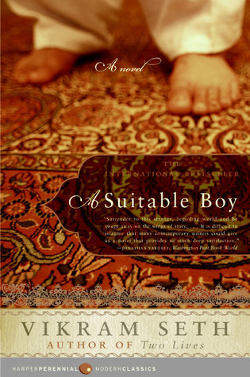

It is a place where you can Review any book of your choice and give us the feedback of that particular book.
Jhumpa Lahiri's Interpreter of Maladies established this young writer as one the most brilliant of her generation. Her stories are one of the very few debut works -- and only a handful of collections -- to have won the Pulitzer Prize for fiction.The Namesake takes the Ganguli family from their tradition-bound life in Calcutta through their fraught transformation into Americans. On the heels of their arranged wedding, Ashoke and Ashima Ganguli settle together in Cambridge, Massachusetts. An engineer by training, Ashoke adapts far less warily than his wife, who resists all things American and pines for her family. When their son is born, the task of naming him betrays the vexed results of bringing old ways to the new world. Named for a Russian writer by his Indian parents in memory of a catastrophe years before, Gogol Ganguli knows only that he suffers the burden of his heritage as well as his odd, antic name.
Rating:

Life of Pi is a fantasy adventure novel by Yann Martel published in 2001. The protagonist, Piscine Molitor "Pi" Patel, a Tamil boy from Pondicherry, explores issues of spirituality and practicality from an early age. He survives 227 days after a shipwreck while stranded on a boat in the Pacific Ocean with a Bengal tiger named Richard Parker.
Rating:
Rating
The best-selling animal advocate Temple Grandin offers the most exciting exploration of how animals feel since The Hidden Life of Dogs. In her groundbreaking and best-selling book Animals in Translation, Temple Grandin drew on her own experience with autism as well as her distinguished career as an animal scientist to deliver extraordinary insights into how animals think, act, and feel. Now she builds on those insights to show us how to give our animals the best and happiest lifeon their terms, not ours.

Vikram Seth's novel is, at its core, a love story: Lata and her mother, Mrs. Rupa Mehra, are both trying to find—through love or through exacting maternal appraisal—a suitable boy for Lata to marry. Set in the early 1950s, in an India newly independent and struggling through a time of crisis, A Suitable Boy takes us into the richly imagined world of four large extended families and spins a compulsively readable tale of their lives and loves. A sweeping panoramic portrait of a complex, multiethnic society in flux, A Suitable Boy remains the story of ordinary people caught up in a web of love and ambition, humor and sadness, prejudice and reconciliation, the most delicate social etiquette and the most appalling violence.
Rating
Why would a cow lick a tractor? Why are collies getting dumber? Why do dolphins sometimes kill for fun? How can a parrot learn to spell? How did wolves teach man to evolve? Temple Grandin draws upon a long, distinguished career as an animal scientist and her own experiences with autism to deliver an extraordinary message about how animals act, think, and feel. She has a perspective like that of no other expert in the field, which allows her to offer unparalleled observations and groundbreaking ideas. People with autism can often think the way animals think, putting them in the perfect position to translate "animal talk." Grandin is a faithful guide into their world, exploring animal pain, fear, aggression, love, friendship, communication, learning, and, yes, even animal genius. The sweep of Animals in Translation is immense and will forever change the way we think about animals.